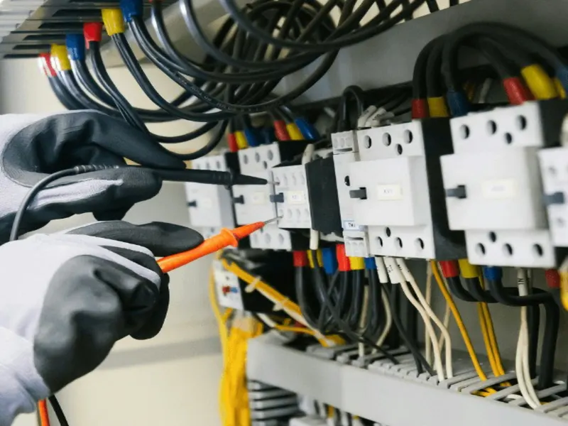

Revize elektro v Písku
[DOPLNIT: a okolí – které obce?]
Revize elektroinstalací, fotovoltaiky, hromosvodů a rozvaděčů. Pečlivě a s rychlou domluvou.
- Hodnocení 4,9 z 5 na Firmy.cz (4 hodnocení)
- Termín po–so dle telefonické domluvy
- [DOPLNIT: osvědčení revizního technika – číslo a rozsah, např. E2A]

Co pro vás udělám
Revize i drobné elektrikářské práce v Písku. [DOPLNIT: pro koho – rodinné domy, byty, firmy?]
Revize elektroinstalace
Výchozí revize u nové nebo upravené instalace a pravidelné revize.
Revize fotovoltaiky
Revize fotovoltaických elektráren.
Revize hromosvodů
Kontrola hromosvodu (ochrany před bleskem).
Revize rozvaděčů
Rozvaděče a další elektrická zařízení.
Proč zákazníci volají mně
Zákazníci v recenzích oceňují pečlivou a rychlou práci.
Termín domluvíme po telefonu, od pondělí do soboty.
Například při připojení elektrokotle vyřídím i administrativu kolem změny tarifu.
Co říkají zákazníci
4 hodnocení na Firmy.cz
„Rychlá domluva a skvěle odvedená práce! … Vyhořelou prodlužovačku u internetu rovnou nahradil pevnou trojzásuvkou. … Určitě doporučuji!“
„…připojoval elektrokotel… Je hodně pečlivý a rychlý, … vyřídil veškerou administrativu na přechod na jiný tarif, a cena výborná. … Vřele doporučuji.“
„Jsem maximálně spokojen. Všem vřele doporučuji.“
Časté otázky
Jaké revize děláte?
Výchozí a pravidelné revize elektroinstalací, revize fotovoltaických elektráren, revize hromosvodů a revize rozvaděčů a dalších elektrických zařízení.
Kde v okolí Písku působíte?
Sídlím v Písku (Krokova 462, Václavské Předměstí). [DOPLNIT: kam jezdíte – např. Strakonice, Milevsko, Protivín?]
Jak často je potřeba revize?
[DOPLNIT: lhůty pravidelných revizí – odpoví pan Durchan]
Kolik stojí revize elektroinstalace?
Cena se odvíjí od rozsahu. Zavolejte na 734 719 757, domluvíme podrobnosti.
Uděláte i drobné elektrikářské práce?
Ano, například výměnu zásuvek nebo připojení elektrokotle, a pomůžu i s vyřízením změny tarifu.
Kdy se dá domluvit termín?
Pondělí až sobota podle telefonické domluvy, v neděli je zavřeno.
Kontakt
- Telefon
- 734 719 757
- durchan.j@seznam.cz
- Adresa
- Krokova 462, 397 01 Písek – Václavské Předměstí
- Kdy
- Po–So dle telefonické domluvy, Ne zavřeno
- IČO
- 23240024